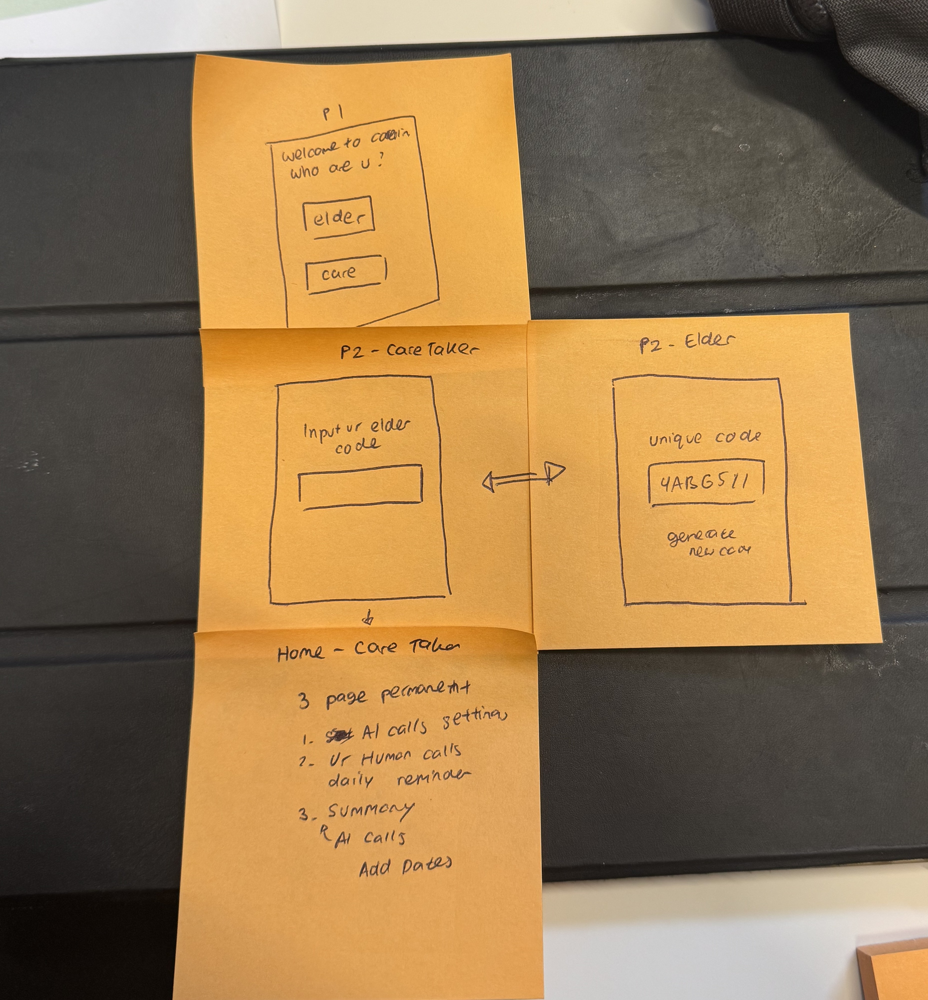

Case study • Mobile app • HuddleHive Women in Tech Hackathon 2026
CARERING
CareRing is an AI-powered eldercare companion app built at HuddleHive Women in Tech Hackathon 2026. It uses Twilio and Gemini AI to place daily check-in calls to elderly parents and alert family if something seems off.
← Back to works
01
Overview
02
Background
Many adults with 9–5 jobs struggle to consistently check in on elderly parents living alone. Calling every day feels intrusive, but not calling feels neglectful — and seniors often won't reach out even when struggling. This creates a gap: family wants to care, but life gets in the way.
The scale of this is growing — yet the emotional gap remains:
Working adults caring for an elderly parent, 2011–2023
Patterson et al., University of Michigan, 2025
Older adults who still report feeling lonely or isolated
University of Michigan National Poll on Healthy Aging, 2024
03
Understanding the problem
Empathize
Due to the 48-hour time constraint, research was conducted through desk research and team brainstorming. We identified two core users and their emotional reality:
Elder
Needs connection, not surveillance.
Wants to feel independent — not monitored or managed.
Caretaker
Needs peace of mind, not more tasks.
Wants a simple way to know "they're okay" without adding to an already full day.
Define
Problem statement: working adults struggle with caregiving consistency — calling every day feels intrusive, but not calling feels neglectful. Elderly parents often won't ask for help even when struggling.
Core design principle: the app should feel like care, not monitoring.
04
System flow
We mapped the end-to-end system flow before touching any screens:
AI calls the elder — a scheduled check-in call goes out.
Gemini handles the conversation — a natural, low-pressure chat, not a script.
Sentiment is analysed — the conversation is read for tone and cause for concern.
Twilio sends a summary + alert to the caretaker — a digest, not a transcript.
Then we defined the tab structure for both sides and worked out the elder–caretaker pairing mechanism:
Caretaker tabs
AI Call Settings Reminder SummaryElder tabs
AI Call Settings Reminder- AI handles routine check-ins so caretakers aren't burdened daily.
- Caretaker gets a digest, not a transcript — summary only.
- Elder flow must be minimal — as few screens and taps as possible.

05
Low-fi sketches
Sketched out before any design tool was opened:
- P1 — Welcome screen (Who are you? Elder / Caretaker)
- P2 — Caretaker — input elder's code to pair
- P2 — Elder — unique code display + generate new code
- Home (Caretaker) — 3 permanent tabs confirmed: AI Call Settings, Reminder, Summary
This lo-fi step kept the whole team aligned on structure before anyone started building or designing.

06
Design decisions
Four decisions that shaped the interface, each paired with the screen it produced:
Color was used intentionally so caretakers can read the elder's call status at a glance without reading any text.

Added a toggle to set different reminder times per day, because a caretaker's availability varies across the week — one fixed time doesn't reflect real 9–5 schedules.
Elder generates a code, caretaker inputs it to connect. Avoids manual account linking, which adds friction — simple enough for elderly users with minimal tech experience.

Alert (red, filled) = urgent, something's wrong. Notify (outline) = gentle nudge. Alert is visually dominant so elders and caretakers can immediately identify the most critical action, especially for users who may not be confident with technology.

07
Design iteration
Two rounds of iteration that made the interface feel lighter and faster to scan:
Iteration 1 — Tab structure
The active tab used a filled background, which felt visually heavy and pulled focus toward navigation instead of content.
Removed the filled background on the active tab indicator. The floating style feels lighter and less visually heavy, keeping focus on the content rather than the navigation.
Iteration 2 — Call summary
A paragraph summary forced caretakers to read everything to find what matters.
Switched to bullet points so caretakers can spot key info in seconds — critical when checking in during a busy workday.
08
Results & takeaways
Delivered a functional MVP prototype within 48 hours across 3 rounds of design testing. The backend–frontend connection didn't fully work during the hackathon, but the core AI call flow and dual-user design system were fully prototyped.
- Emoji in UI isn't elder- or caretaker-friendly — rebuilt the interface post-hackathon with clearer iconography and visual hierarchy.
- Backend–frontend integration needs to be scoped and tested earlier in a time-constrained sprint.
- The problem space felt real and meaningful — eldercare and working-adult burnout was worth building for.
09
Reflection & future improvements
In hindsight, design and dev alignment from hour one would have changed the outcome. I also underestimated how much extra thought designing for elderly users requires — accessibility isn't an afterthought, it's the whole point.
If I built this again:
- Proper user interviews with actual elderly users and working adults.
- Accessibility testing — larger touch targets, simpler language, higher contrast.
- Fix the backend–frontend connection so the full AI call flow works end to end.
- Family group feature — multiple caretakers receive alerts, not just one.